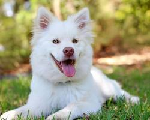
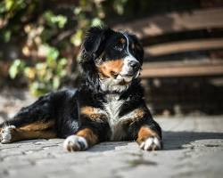
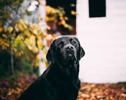
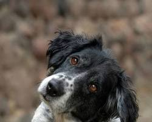
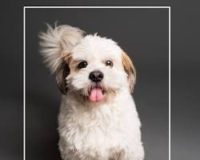
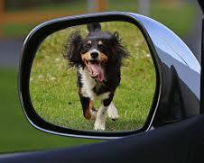
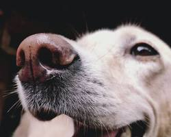

Buster serves as the stout guardian of the Whispering Ravine, using his powerful snorts to dispel the enchanted mists that lead travelers astray. On his journey, he seeks the Golden Acorn to restore the ancient strength of the Bulldog Clan.

Sadie is a mystical tracker who chases sun-shadows across the Infinite Meadow to find portals to hidden realms. Her curly, cream-colored coat acts as a beacon for lost spirits looking for their way back to the Great Labradoodle Spire.

Rex is the stoic Commander of the Iron Gate, standing watch over the transition between the physical world and the Dreamscape. He journeys through the Shadow Woods, guided by his keen ears to intercept any nightmares threatening the peaceful kingdom.

Penny is a cunning Fox-Spirit from the Eastern Peaks who uses her legendary side-eye to freeze magical foes in their tracks. She travels in search of the Eternal Ginger Blossom, which is said to grant the power of flight to the Shiba Inu lineage.

Buddy is the Light-Bearer of the Sunken Isles, carrying a glowing orb that illuminates the path through the darkest underwater caves. He treks across the shifting sands to deliver the orb to the Temple of Waves before the tides turn forever.
Luna is a Weaver of Stars who herds the stray constellations back into their proper patterns across the night sky. With her black-and-white coat blending into the twilight, she runs along the horizon to keep the celestial balance intact.

Max is a Master Alchemist who can track the scent of rare magical elements hidden deep within the Root-Forest. His tricolor markings are actually ancient runes that glow whenever he nears the fabled Fountain of Infinite Treats.

Scout is a high-spirited Scout for the Sky-Brigade, using her powerful "wiggle-propulsion" to leap across floating islands. She is currently on a quest to find the legendary Liver-Spotted Map that reveals the location of the Cloud Citadel.